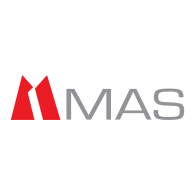
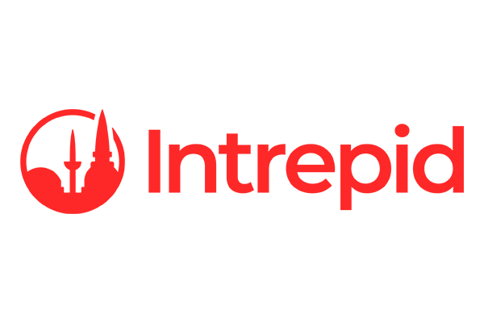
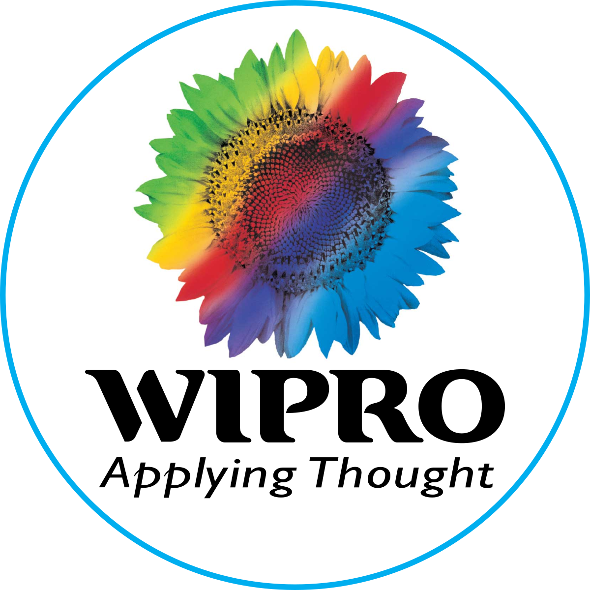
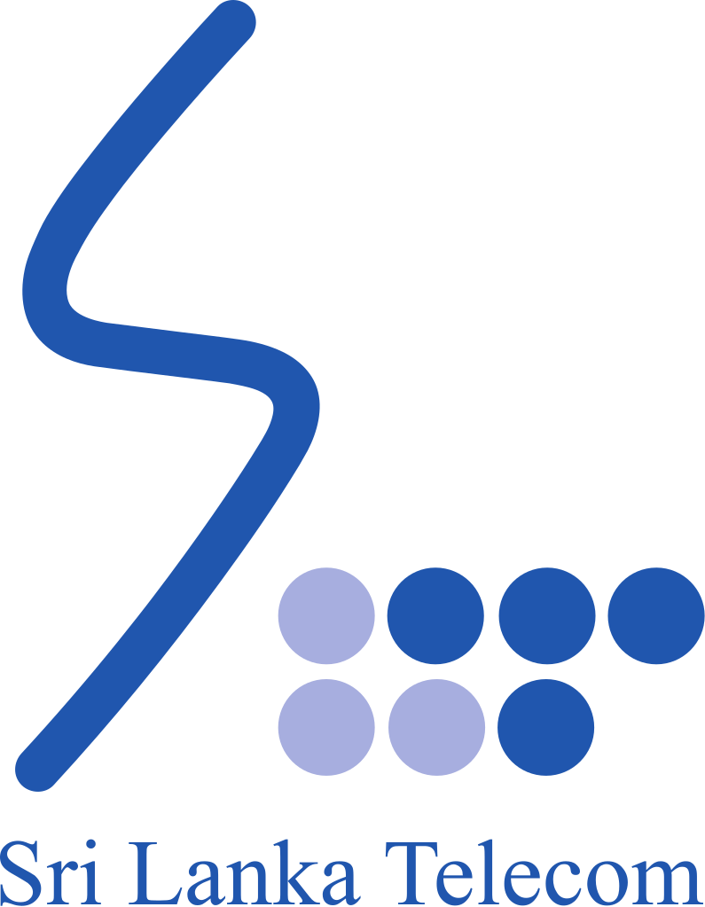
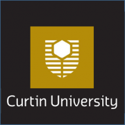
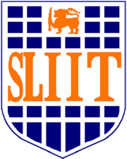

Manager, IT Infrastructure Services
MAS Holdings ↗Cloud and on-premises infrastructure management, IT strategic planning, project portfolio management, and risk management strategy.
I'm Hashan Wickramasingha Wadanambi, an IT professional with 12+ years of experience delivering secure infrastructure, driving technology strategy, and leading cross-functional teams.
I am a seasoned IT professional committed to the intersection of technology, security, and leadership. Throughout my career, I have delivered innovative solutions, led cross-functional teams, and strengthened organizational security.
My approach combines hands-on technical knowledge with strategic planning, project delivery, and a focus on long-term business value.
A track record across enterprise infrastructure, project delivery, and IT operations.

Cloud and on-premises infrastructure management, IT strategic planning, project portfolio management, and risk management strategy.

Infrastructure maintenance and monitoring, firewall management, and SharePoint architecture.
Cross-functional cloud project leadership, project lifecycle management, Scrum practices, and infrastructure troubleshooting.

Server infrastructure, IT change management, support SLAs, and IT asset management.

Asset management, project meeting coordination, automation scripting, and help desk support.

BSc Computer Systems & Networking
2008 – 2011
Diploma in Information Technology
2008 – 2010Postgraduate Diploma in Diplomacy & World Affairs
2018 – 2019Diploma in English for Employment
2007 – 2009Explore projects and professional work in the interactive portfolio below.
Having trouble viewing the embedded portfolio? Open it in a new tab ↗
Interested in technology leadership, IT infrastructure, cloud, or cybersecurity? I'd be glad to connect.
Send me an email ↗